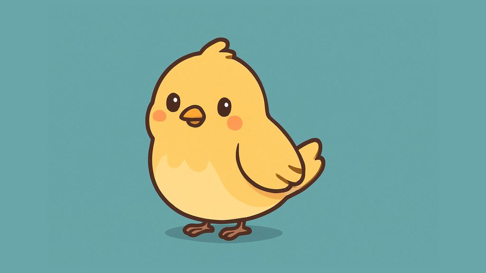
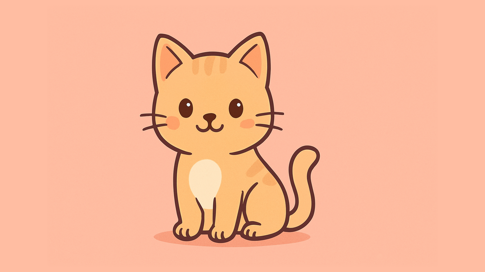
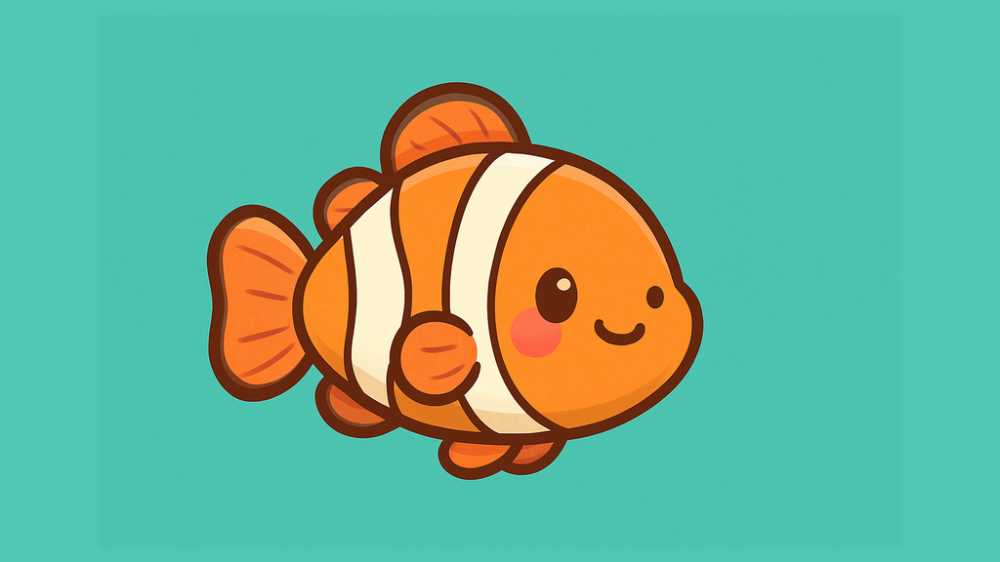

Minyatur – Mouse Module
The slider supports touch gestures by default. This example demonstrates the mouse module, which adds support for mouse-based dragging. Try dragging one of the slides with your mouse.


